蜂窝边长1，球直径0.10，ket/bra球心距0.19；开放灰腿上、下、留白各0.03。方形边长0.3，中心为双小球中点。所有圆柱与方形按真实深度相互遮挡，整体在25%透明底图之上；方形仅对相连细腿使用符号遮罩。xz面保持正方形；xy面短边为长边一半，内角60°/120°。蓝色(110,150,255)，纯点线；灰腿(160,160,160)。复制位移为4/2/6，向右位移2。y省略号投影点距与x一致。2_bis与3_bis都保留。PNG与PDF仅保留极小边距；单图无文字、坐标轴或背景网格，合图仅有(a–d)。
数值状态：三pair与八步收缩核对通过；默认求谱器在基扩展时接纳近零块，导致正交性崩坏。原因已定位，求谱器尚未修复，当前原型不可生产使用。
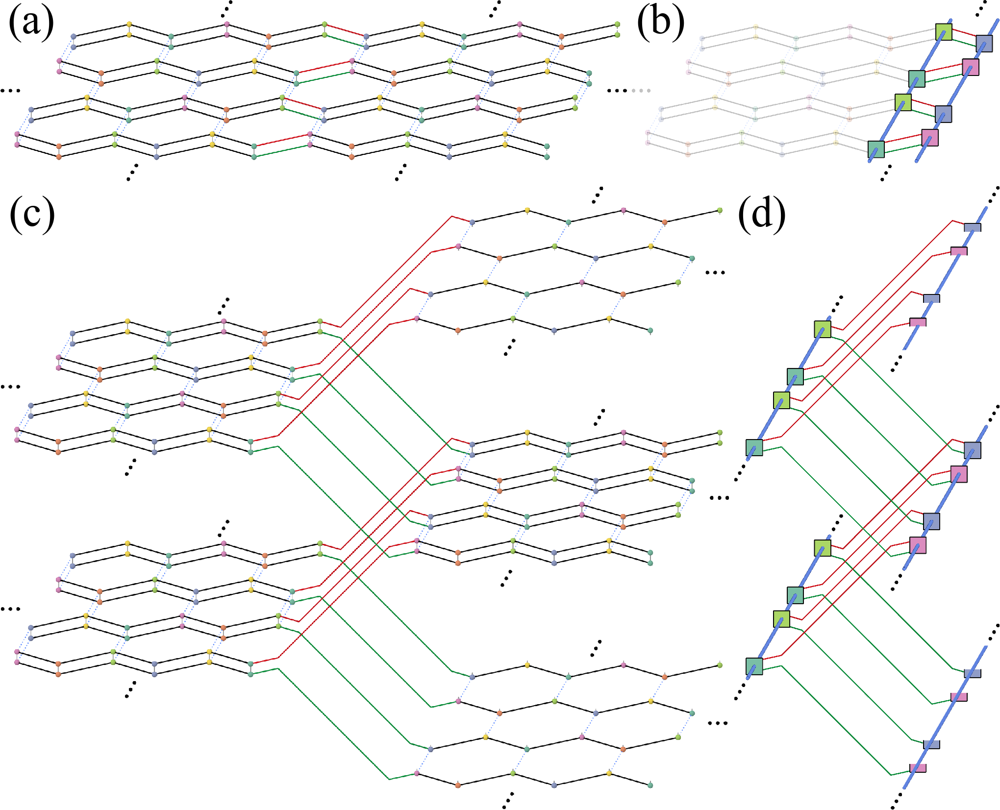
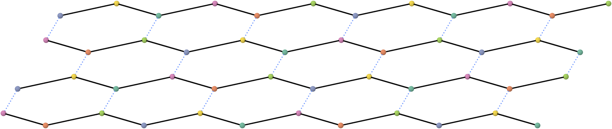
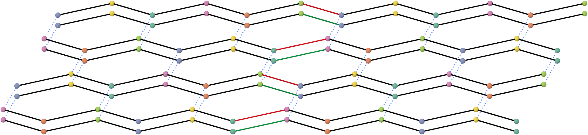
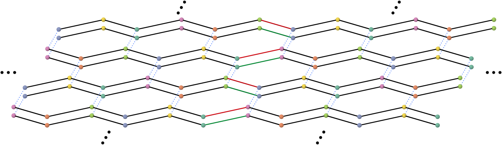
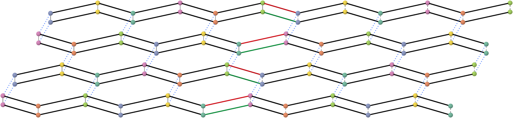
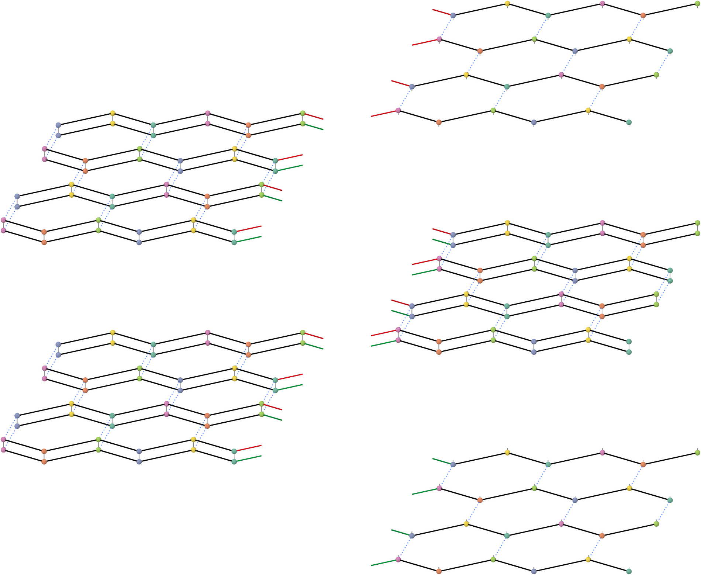
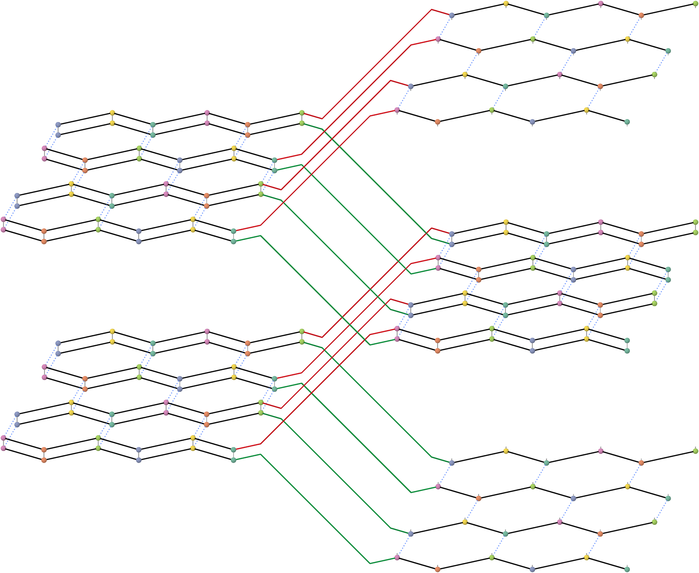
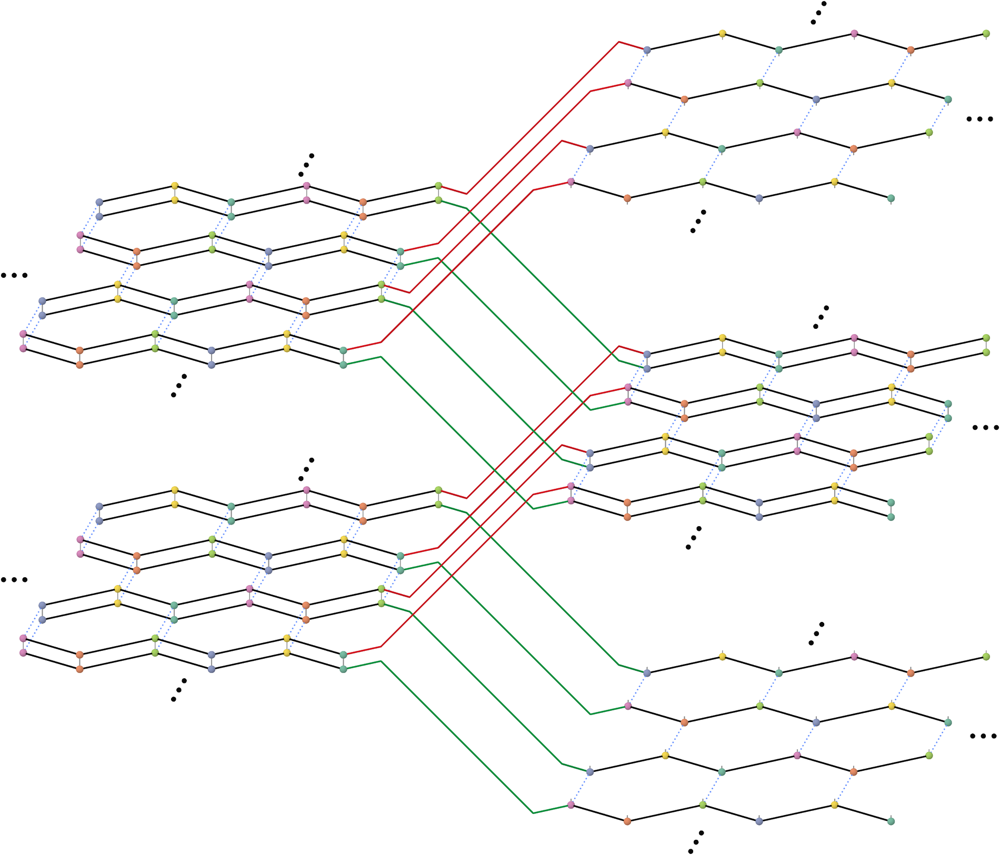
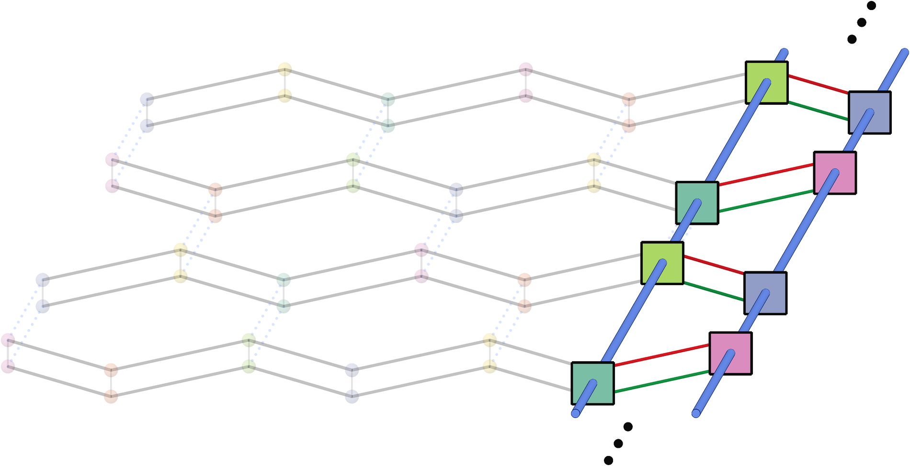
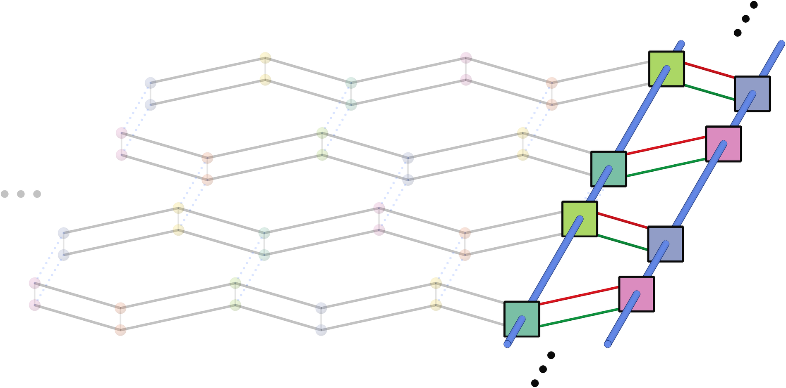
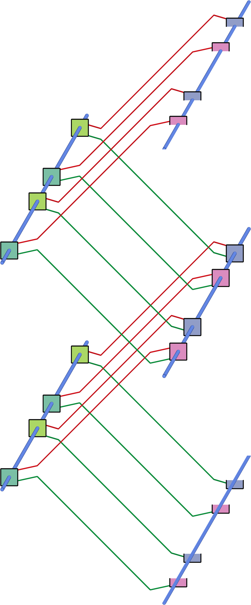
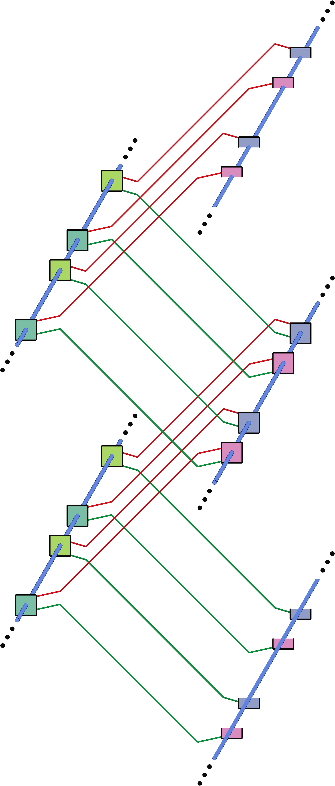